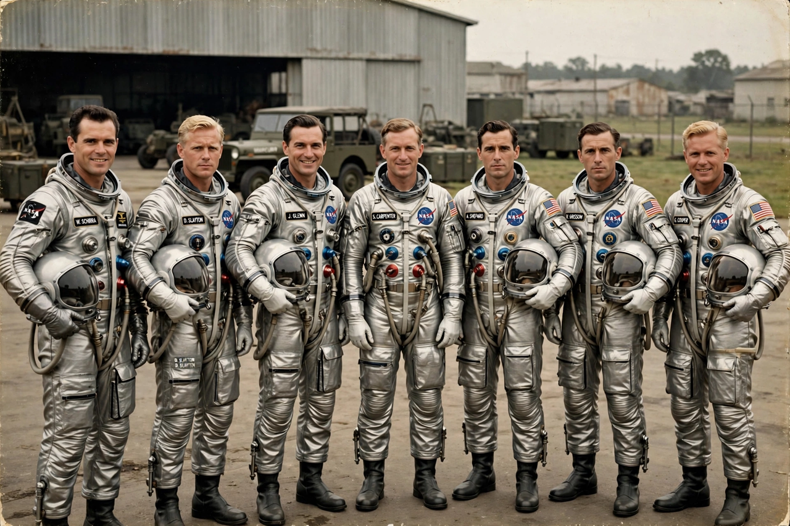

Mercury Seven
From Wikipedia, the free encyclopedia
| Mercury Seven | |
|---|---|
| Selected | 9 April 1959 |
| Agency | NASA |
| Group | First American astronauts |
| Members | Shepard, Grissom, Glenn, Carpenter, Schirra, Slayton, Cooper |

The Mercury Seven in their silver suits, 1959.The Mercury Seven were the first group of American astronauts, selected by NASA in April 1959 to fly the Project Mercury spacecraft. Chosen from military test pilots, they were introduced to intense public attention — "the Right Stuff", in Tom Wolfe's later phrase — and became national heroes before any of them had flown.
The seven were Scott Carpenter, Leroy Gordon Cooper, John Glenn, Virgil "Gus" Grissom, Walter Schirra, Alan Shepard and Donald "Deke" Slayton. All but Slayton flew in Mercury between 1961 and 1963; Slayton, grounded by a heart condition, became NASA's chief astronaut and finally flew in 1975 on the Apollo–Soyuz Test Project.
Legacy
Between them the Seven made America's first spaceflight (Shepard, 1961), first orbital flight (Glenn, 1962) and the programme's longest flight (Cooper's 34-hour Faith 7 mission, 1963). Glenn returned to space at age 77 aboard the Shuttle on STS-95 in 1998, the oldest person to fly at the time, and Grissom died in the Apollo 1 fire in 1967.
Their selection set the template for astronaut groups that followed, and their exclusive Life magazine contract and media fame shaped how NASA presented human spaceflight to the public ever after.
See also
Project Mercury · Alan Shepard · John Glenn · Gus Grissom · Gordon Cooper · Apollo–Soyuz Test Project